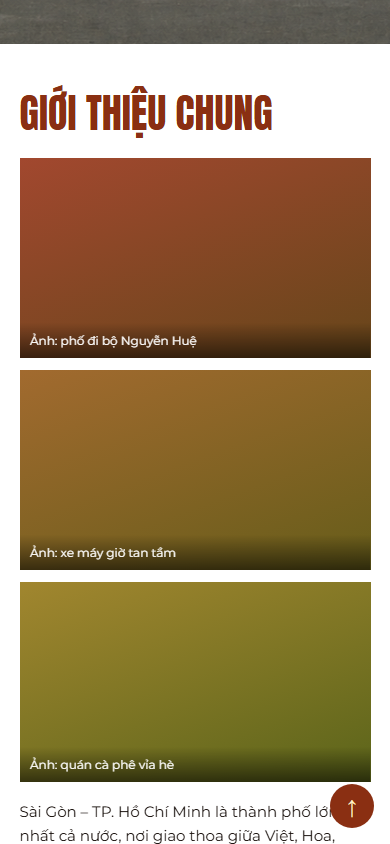
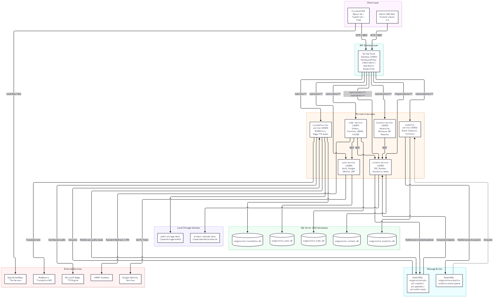
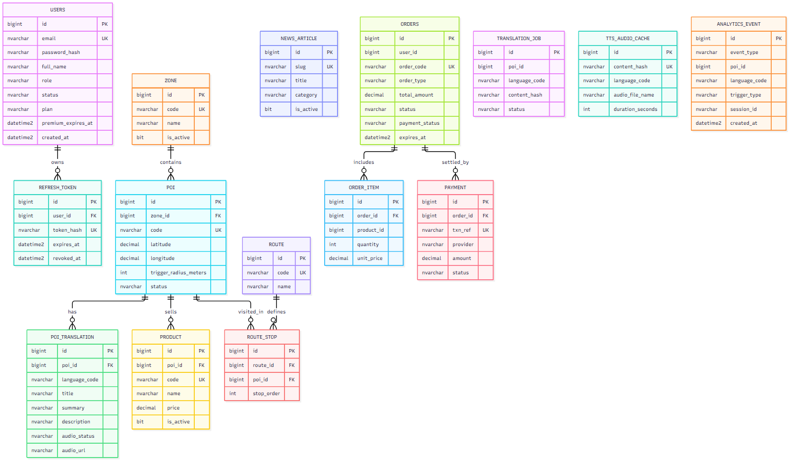
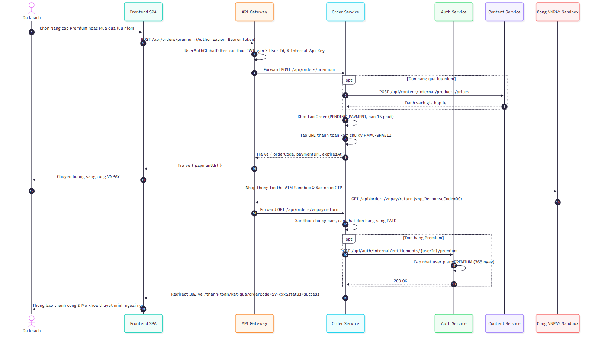
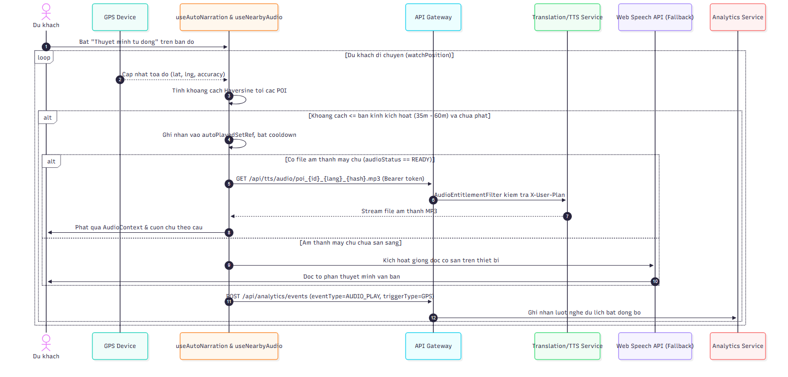
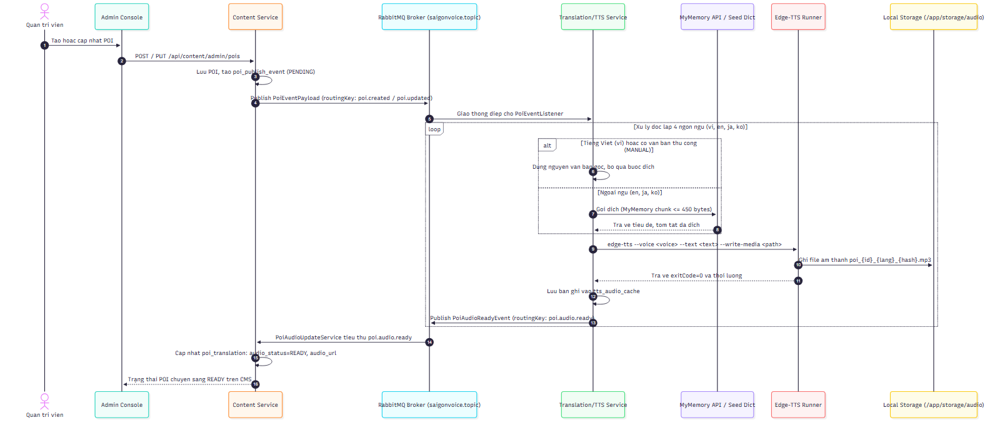
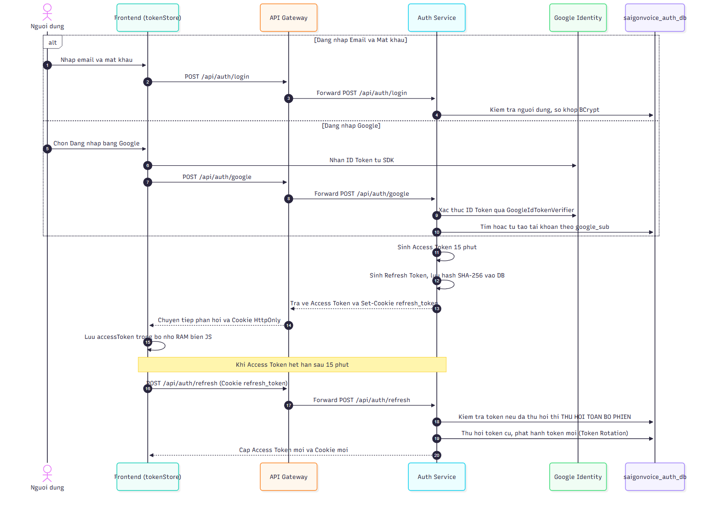

(Mục này được suy luận từ README.md:15-37, PRD_Echora.md:6-13 và giao diện du khách tại frontend/src/pages/NearbyPage.tsx:113-145)
vi, en, ja, ko).(Mục này được suy luận từ README.md:39-75, docker-compose.yml:1-380 và frontend/src/App.tsx:85-165)
(Mục này được suy luận từ kịch bản tương tác người dùng trong frontend/src/pages/NearbyPage.tsx:160-350, frontend/src/pages/ScanPage.tsx:30-90, frontend/src/pages/CheckoutPage.tsx:50-180 và frontend/src/admin/AdminRoutes.tsx:75-120)
vi, en, ja, ko) từ thanh điều hướng trên cùng./diem-du-lich), trình duyệt yêu cầu cấp quyền định vị GPS. Sau khi đồng ý, bản đồ Leaflet định vị tọa độ người dùng và hiển thị 7 điểm di tích trung tâm TP.HCM./nang-cap)./am-thuc), du khách đăng nhập tài khoản (hoặc đăng nhập nhanh bằng Google OAuth2), chọn phương thức thanh toán VNPAY và hoàn tất giao dịch trên cổng sandbox.PREMIUM ngay lập tức, cho phép nghe toàn bộ bài thuyết minh ngoại ngữ trong 365 ngày./quet-ma) hướng camera vào bảng mã QR tại di tích để nạp bài thuyết minh tương ứng./quan-tri, đăng nhập bằng tài khoản Quản trị viên để quản lý danh mục POI, theo dõi tiến độ dịch tự động trên RabbitMQ, quản lý bài viết tin tức và duyệt đơn hàng lưu niệm.| Giao diện Trang chủ Di động | Giao diện Khám phá & Trải nghiệm |
|---|---|
 |
(Mục này được suy luận từ README.md:15-37 và docs/PRD_Echora.md:9-13)
vi, en, ja, ko), kết hợp giọng đọc AI chất lượng cao với cơ chế phụ đề chạy theo âm thanh.

navigator.geolocation.watchPosition và tính khoảng cách tới các POI (nguồn: frontend/src/hooks/useAutoNarration.ts:219-240, backend/location-service/src/main/java/com/saigonvoice/location/service/LocationServiceImpl.java:37-81).en, ja, ko) qua MyMemory API / Seed Dictionary và gọi tiến trình edge-tts sinh file MP3 lưu tại volume cục bộ (nguồn: backend/translation-tts-service/src/main/java/com/saigonvoice/translation/service/PoiPipelineServiceImpl.java:39-140, backend/translation-tts-service/src/main/resources/application.yml:58-76).saigonvoice_content_db, saigonvoice_translation_db, saigonvoice_analytics_db, saigonvoice_auth_db, saigonvoice_order_db) với 5 tài khoản đăng nhập riêng biệt, bảo đảm cô lập quyền hạn (nguồn: docker/init-databases.sql:1-120, docker-compose.yml:60-112).ORDER_PREMIUM_PRICE), tự động nâng cấp quyền tài khoản sang PREMIUM khi thanh toán thành công để mở khóa thuyết minh ngoại ngữ trên toàn hệ thống (nguồn: backend/order-service/src/main/java/com/saigonvoice/order/service/OrderService.java:154-215, 596-599, backend/translation-tts-service/src/main/java/com/saigonvoice/translation/config/AudioEntitlementFilter.java:71-77, frontend/src/context/PremiumContext.tsx:5-40).PathGuardFilter, yêu cầu HMAC-SHA256 JWT với quyền ADMIN cho các route quản trị bằng AdminAuthGlobalFilter, kiểm soát token truy cập người dùng bằng UserAuthGlobalFilter và xóa bỏ toàn bộ header nhạy cảm do client tự ý gắn qua UntrustedHeaderStripGlobalFilter (nguồn: backend/api-gateway/src/main/java/com/saigonvoice/gateway/filter/PathGuardFilter.java:35-80, backend/api-gateway/src/main/java/com/saigonvoice/gateway/filter/AdminAuthGlobalFilter.java:101-238, backend/api-gateway/src/main/java/com/saigonvoice/gateway/filter/UserAuthGlobalFilter.java:69-127).tokenStore.ts), Refresh Token lưu trong HttpOnly Cookie với cờ xoay vòng token (Token Rotation); phát hiện tái sử dụng token đã thu hồi sẽ lập tức hủy toàn bộ phiên của người dùng (nguồn: backend/auth-service/src/main/java/com/saigonvoice/auth/service/RefreshTokenService.java:18-22, 44-95, frontend/src/api/tokenStore.ts:1-21).SCAN và AUDIO_PLAY bất đồng bộ qua RabbitMQ, áp dụng Rate Limit 60 request/phút/IP và tổng hợp báo cáo tỷ lệ hoàn tất bài nghe theo nguồn GPS/QR/Manual (nguồn: backend/analytics-service/src/main/java/com/saigonvoice/analytics/controller/AnalyticsEventController.java:21-26, backend/api-gateway/src/main/java/com/saigonvoice/gateway/filter/AnalyticsRateLimitGlobalFilter.java:30-77).feedbackService.ts hiện chỉ lưu tạm hoặc ghi log, có ghi chú TODO về việc xây dựng API nhận phản hồi: /* TODO: gửi lên BE, ví dụ fetch("/api/feedback",{method:"POST",...}) */ (nguồn: frontend/src/services/feedbackService.ts:8).// TODO: Migrate to 2-level administrative structure (Tinh/Phuong) as of 2025-07-01 (nguồn: frontend/src/services/addressService.ts:1).// TODO: Remove test data from seed before production (nguồn: frontend/src/components/orders/OrderDetail.tsx:96).order-service: Trong khi 5 service khác và frontend đều có tệp cấu hình GitHub Actions trong .github/workflows/, phân hệ order-service hiện chưa có tệp workflow CI tự động riêng.
Giải thích luồng:
X-Internal-Api-Key.order-service) kiểm tra tính hợp lệ của sản phẩm qua content-service, tạo mã đơn hàng duy nhất và ký số tạo liên kết thanh toán VNPAY.PAID và kích hoạt tự động gói PREMIUM cho tài khoản bên auth-service.
Giải thích luồng:
analytics-service để ghi nhận thống kê lượt tương tác.
Giải thích luồng:
translation-tts-service) nhận sự kiện, tự động phân tách và xử lý 4 luồng ngôn ngữ độc lập; sử dụng giọng đọc chuyên biệt của từng quốc gia (vi-VN-HoaiMyNeural, en-US-AvaNeural, ja-JP-NanamiNeural, ko-KR-SunHiNeural).poi.audio.ready để cập nhật trạng thái sẵn sàng vào cơ sở dữ liệu nội dung.
Giải thích luồng:
Cơ chế Nạp Dữ liệu POI Một Lần Phía Khách (Single-Shot POI Retrieval):
/api/content/pois/guide ngay khi mở trang bản đồ. Dữ liệu được lưu trong state của React, ứng dụng không gửi thêm request nào để lấy lại nội dung văn bản khi du khách di chuyển giữa các điểm (nguồn: frontend/src/pages/NearbyPage.tsx:194-211, backend/content-service/src/main/java/com/saigonvoice/content/controller/PoiController.java:39-44).nearbyPois.json dự phòng sẵn trong bundle frontend (nguồn: frontend/src/pages/NearbyPage.tsx:213-226).Thuật toán Tính Khoảng cách Haversine & Lọc Bounding Box:
location-service), trước khi duyệt chi tiết, hệ thống tính toán hình chữ nhật bao quanh (Bounding Box) với độ lệch kinh/vĩ độ $\Delta Lat = \frac{r}{111320}$, $\Delta Lng = \frac{r}{111320 \times \cos(Lat)}$ để tối ưu hóa truy vấn cơ sở dữ liệu (nguồn: backend/location-service/src/main/java/com/saigonvoice/location/util/GeoUtils.java:26-44).Quy tắc Kiểm soát Phân quyền Gói Ngoại ngữ Premium (Audio Entitlement):
vi) được miễn phí truy cập cho mọi đối tượng du khách.en, ja, ko) bắt buộc tài khoản phải có trạng thái gói PREMIUM (X-User-Plan: PREMIUM). Nếu người dùng thuộc gói FREE cố tình yêu cầu tải file MP3 ngoại ngữ, bộ lọc AudioEntitlementFilter tại dịch vụ TTS sẽ từ chối với mã lỗi 403 Forbidden kèm thông báo: "Ngôn ngữ này yêu cầu gói Premium đang hoạt động." (nguồn: backend/translation-tts-service/src/main/java/com/saigonvoice/translation/config/AudioEntitlementFilter.java:71-77, frontend/src/context/PremiumContext.tsx:5-15).Chống Phát Lặp Âm thanh & Cửa sổ Bảo vệ Dừng Thủ công:
autoPlayedSetRef để không bao giờ tự động phát lặp lại trong suốt phiên tham quan (nguồn: frontend/src/hooks/useAutoNarration.ts:111-135).guard window = 5000ms); bộ định vị GPS sẽ tuyệt đối không tự ý bật lại bài đọc đó trong vòng 5 giây này dù du khách vẫn đang đứng trong vùng Geofence (nguồn: frontend/src/hooks/useAutoNarration.ts:83-93, 123-130).Chính sách Khóa Tấn công Brute-Force & Giới hạn Tần suất (Rate Limiting):
POST /api/analytics/events) tối đa 60 yêu cầu/phút trên mỗi địa chỉ IP thực tế (bỏ qua IP giả lập từ header X-Forwarded-For), trả về HTTP 429 Too Many Requests kèm header Retry-After khi vi phạm (nguồn: backend/api-gateway/src/main/java/com/saigonvoice/gateway/filter/AnalyticsRateLimitGlobalFilter.java:30-81).Chính sách Đơn hàng, Phí Vận chuyển & Tính Độc bản Idempotency:
PAYMENT_EXPIRE_MINUTES = 15), quá thời gian này đơn chuyển sang trạng thái hết hạn (nguồn: backend/order-service/src/main/java/com/saigonvoice/order/service/OrderService.java:49, 130).Idempotency-Key khi tạo đơn hàng: nếu người dùng gửi lại cùng một key, hệ thống trả về ngay đơn hàng cũ mà không tạo thêm bản ghi mới trong cơ sở dữ liệu (nguồn: backend/order-service/src/main/java/com/saigonvoice/order/service/OrderService.java:78-84).Bảo toàn Nội dung Biên soạn Thủ công (Manual Content Priority):
MANUAL), hệ thống sẽ ưu tiên giữ nguyên văn bản của người viết và tuyệt đối không cho dịch máy ghi đè lên (nguồn: backend/translation-tts-service/src/main/java/com/saigonvoice/translation/service/PoiPipelineServiceImpl.java:63-104, backend/content-service/src/main/resources/db/migration/V5__add_poi_slug_and_translation_source.sql:1-15).(Các mốc thời gian và kế hoạch phát hành được tổng hợp từ lịch sử Git, tài liệu đồ án docs/PRD_Echora.md và README.md:309-316)
| Target Date | Milestone | Description | Trạng thái Code |
|---|---|---|---|
| 2026-10-18 | M1: Nền tảng Bản đồ & CMS Quản trị | Hoàn thiện giao diện bản đồ du lịch Leaflet, hệ thống menu quản trị đa cấp, phân hệ quản lý điểm POI, khu vực và lộ trình di sản. | Đã hoàn thành (nguồn: git commit f9cf23e, 652ef81) |
| 2026-10-19 | M2: Phân hệ Quà lưu niệm & Tin tức | Tích hợp trang quà lưu niệm gắn với điểm dừng du lịch, hoàn thiện hệ thống tin tức văn hóa Sài Gòn và phục vụ ảnh sản phẩm. | Đã hoàn thành (nguồn: git commit bbe4ef5, b466e88) |
| 2026-10-20 | M3: Khóa Ngoại ngữ & Gói Premium | Triển khai bộ lọc bản quyền âm thanh ngoại ngữ (en, ja, ko), giao diện trang nâng cấp và luồng thanh toán dịch vụ. |
Đã hoàn thành (nguồn: git commit 1b7d8d2, b5c522c) |
| 2026-10-22 | M4: Đóng gói Hoàn chỉnh Toàn hệ thống | Tích hợp toàn diện cổng VNPAY sandbox, quản lý đơn hàng gắn tài khoản, kiểm thử tự động 62 test cases và đồng bộ tài liệu Docker. | Đã hoàn thành (nguồn: git commit 0a1ac17, 70b71eb) |
| Chưa xác định trong code | M5: Thử nghiệm Thực địa (Pilot Onsite) | Triển khai thử nghiệm thực tế tại 7 điểm di tích trung tâm TP.HCM, đo đạc độ chính xác Geofence và chất lượng giọng đọc ngoài trời. | Chưa xác định trong code (tham chiếu mục Open Questions) |
| Chưa xác định trong code | M6: Phát hành Chính thức (Production Launch) | Đưa hệ thống lên máy chủ có tên miền chính thức, cấp phát chứng chỉ HTTPS công khai và cấu hình tài khoản VNPAY thương mại. | Chưa xác định trong code (tham chiếu mục Open Questions) |
(Trích xuất trực tiếp từ lịch sử git log của dự án)
| DATE | COMMIT | DESCRIPTION |
|---|---|---|
| 2026-10-22 | 0a1ac17 |
feat: hoàn thiện gói premium, đơn hàng, tài khoản và giao diện người dùng |
| 2026-10-21 | 70b71eb |
docs: cập nhật README đầy đủ hướng dẫn chạy docker và mật khẩu hệ thống |
| 2026-10-20 | 1b7d8d2 |
feat(premium): khóa thuyết minh ngoại ngữ và thêm trang nâng cấp dịch vụ |
| 2026-10-20 | b5c522c |
feat(admin): quản lý tin tức, quà lưu niệm và luồng đăng nhập Echora |
| 2026-10-20 | b466e88 |
feat(content): quản lý tin tức full-stack, phân quyền gateway và ảnh quà lưu niệm |
| 2026-10-19 | bbe4ef5 |
feat(souvenir): đổi trang Ẩm thực thành Quà lưu niệm gắn điểm du lịch |
| 2026-10-18 | 4e7372c |
fix(admin): hiển thị popover mục con và nhãn Sắp có khi sidebar thu gọn |
| 2026-10-18 | 3c47477 |
test(admin): đồng bộ test sidebar theo cấu hình adminMenu mới và test bàn phím |
| 2026-10-18 | 652ef81 |
feat(admin): làm lại sidebar có menu con xổ xuống, popover thu gọn và a11y |
| 2026-10-18 | 6efcf10 |
feat(admin): đồng bộ breadcrumb và tiêu đề trang từ cấu hình adminMenu |
| 2026-10-18 | 515a9a2 |
feat(admin): bổ sung svg icon nét mảnh và chevron cho menu con |
| 2026-10-18 | f9cf23e |
admin: thêm cấu hình menu quyết định (nhóm mục, con xếp theo vai trò) |
| 2026-10-18 | 691c44d |
feat(admin): đồng bộ nhãn trạng thái hoạt động trên trang khu vực, lộ trình, sản phẩm |
| 2026-10-18 | 2f83016 |
feat(admin-poi): lọc trạng thái và ngôn ngữ phía server, đếm mục cần chú ý |
| 2026-10-18 | 0bda93c |
feat(content): hỗ trợ lọc server-side overallStatus và languageStatus cho POI |
order-service:.github/workflows chứa các workflow tự động chạy test cho analytics-service, api-gateway, auth-service, content-service, location-service và frontend-ci. Riêng order-service chưa có workflow file. Cần làm rõ khi nào bổ sung pipeline tự động cho service này.MAIL_HOST, MAIL_USERNAME hiện đang để trống theo mặc định; khi chạy dev hệ thống chỉ in link xác thực tài khoản ra console log (nguồn: backend/auth-service/src/main/resources/application.yml:45). Cần xác định cấu hình máy chủ SMTP thật khi triển khai sản phẩm ra môi trường công cộng.https:// (chỉ cho phép ngoại lệ trên localhost). Dự án cần có kế hoạch thiết lập Ingress / Nginx reverse proxy với chứng chỉ SSL/TLS công khai khi chạy thử nghiệm ngoài trời.Q1: Du khách nước ngoài không tạo tài khoản thì có sử dụng được ứng dụng không?
vi) qua GPS hoặc quét mã QR. Chỉ khi muốn nghe thuyết minh bằng ngoại ngữ (en, ja, ko) hoặc đặt mua quà lưu niệm thì người dùng mới cần đăng ký/đăng nhập tài khoản.Q2: Nếu thiết bị du khách mất kết nối Internet khi đang ở di tích thì âm thanh có phát được không?
Q3: Tại sao ứng dụng không lưu JWT Access Token trong localStorage?
localStorage tiềm ẩn nguy cơ bị đánh cắp qua lỗ hổng XSS (Cross-Site Scripting). Echora áp dụng chuẩn bảo mật cao cấp: Access Token chỉ lưu trong biến RAM của JavaScript (mất khi tắt tab), còn Refresh Token được lưu trong HttpOnly Cookie có cờ SameSite=Strict, giúp ngăn chặn hoàn toàn việc mã độc đọc lén token.Q4: Tại sao dự án sử dụng cổng ánh xạ Gateway 18080 trong Docker?
8080 trên hệ điều hành Windows thường xuyên bị chiếm dụng bởi các tiến trình nội bộ, dịch vụ IIS hoặc phần mềm khác. Việc chuyển cổng sang 18080 giúp thành viên cài đặt dự án không bị lỗi xung đột cổng mạng (Port already in use).(Báo cáo rà soát thực tế toàn bộ các thành phần trong kho mã nguồn)
| Phân hệ / Module | Thư mục Nguồn | Trạng thái | Ghi chú & Bằng chứng Rà soát |
|---|---|---|---|
| API Gateway | backend/api-gateway/ |
Đã đọc 100% | Rà soát application.yml, 6 bộ lọc an ninh (PathGuardFilter, AdminAuthGlobalFilter, UserAuthGlobalFilter, InternalPathBlockFilter, AnalyticsRateLimitGlobalFilter, UntrustedHeaderStripGlobalFilter) và bộ test suite tích hợp 1678 dòng. |
| Auth Service | backend/auth-service/ |
Đã đọc 100% | Rà soát logic đăng ký/đăng nhập, Google OAuth2 Identity, BCrypt hashing, vòng đời Refresh Token Rotation, kiểm soát brute-force và cơ sở dữ liệu saigonvoice_auth_db. |
| Content Service | backend/content-service/ |
Đã đọc 100% | Rà soát 10 controller (POI, Lộ trình, Khu vực, Quà lưu niệm, Tin tức, Phục vụ ảnh), 13 file migration Flyway và listener cập nhật âm thanh từ RabbitMQ. |
| Location Service | backend/location-service/ |
Đã đọc 100% | Rà soát công thức tính khoảng cách Haversine, thuật toán Bounding Box trong GeoUtils.java, API resolve POI và resolve QR Token. |
| Translation/TTS Service | backend/translation-tts-service/ |
Đã đọc 100% | Rà soát pipeline xử lý POI event, cấu hình 4 giọng đọc Edge-TTS, cơ chế chia nhỏ văn bản MyMemory API, bộ lọc bản quyền AudioEntitlementFilter và lưu trữ MP3 cục bộ. |
| Order Service | backend/order-service/ |
Đã đọc 100% | Rà soát logic đặt hàng quà lưu niệm, miễn phí vận chuyển >= 50k, đơn hàng Premium 500k, tích hợp chữ ký băm VNPAY sandbox và kích hoạt gói qua REST nội bộ. |
| Analytics Service | backend/analytics-service/ |
Đã đọc 100% | Rà soát cơ chế xếp hàng đợi RabbitMQ cho sự kiện du lịch, các chỉ số SCAN/AUDIO_PLAY và API tổng hợp báo cáo cho admin. |
| Frontend Web SPA | frontend/src/ |
Đã đọc 100% | Rà soát cấu hình routes trong App.tsx, giao diện bản đồ NearbyPage.tsx, bộ hook thuyết minh useAutoNarration & useNearbyAudio, giỏ hàng CartContext, phân quyền PremiumContext, tokenStore.ts và toàn bộ phân hệ quản trị frontend/src/admin/. |
| Hạ tầng Docker & CSDL | docker-compose.yml, docker/ |
Đã đọc 100% | Rà soát kịch bản dựng 9 container, cấu hình mạng bridge saigonvoice-net, 4 volumes lưu trữ và script phân quyền 5 CSDL trong init-databases.sql. |
| CI/CD Pipelines | .github/workflows/ |
Đã đọc 100% | Rà soát 7 tệp workflow chạy kiểm thử tự động cho frontend và 5 microservices backend. |
| Thư mục Bỏ qua | node_modules/, target/, .git/, .idea/, .vscode/ |
Bỏ qua theo quy định | Các thư mục mã máy, dependency bên ngoài và cấu hình IDE được bỏ qua theo đúng nguyên tắc đề ra. |